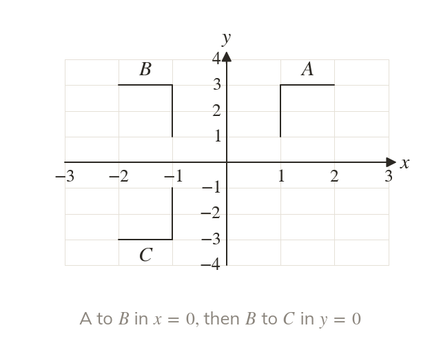
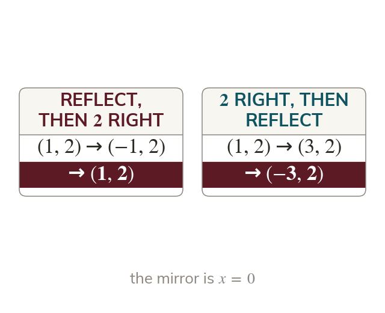
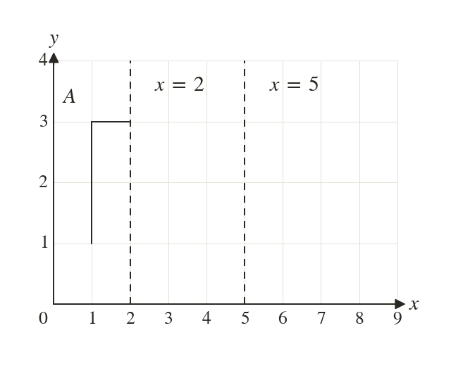
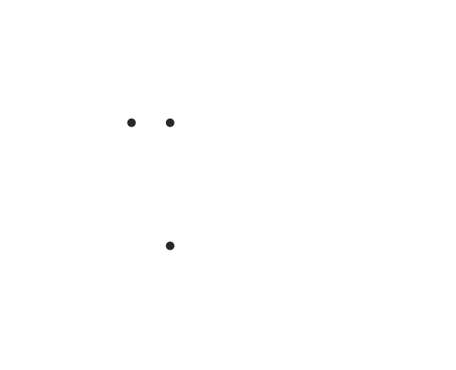
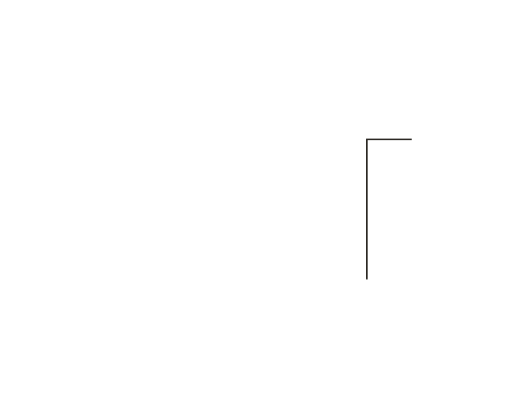
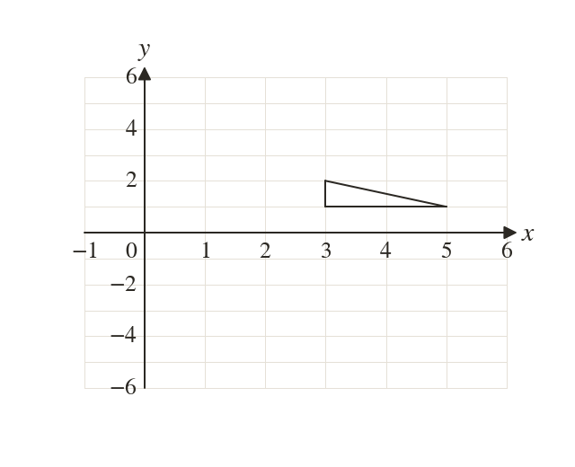
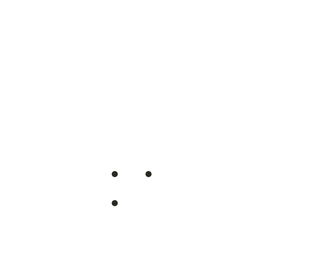
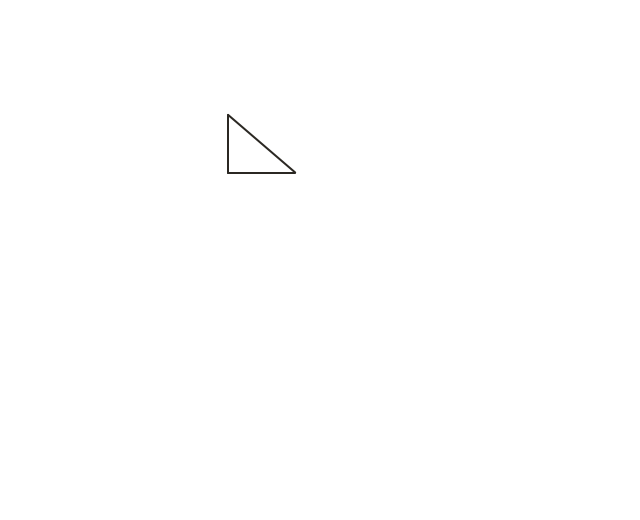
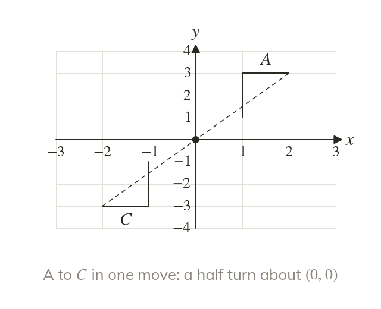
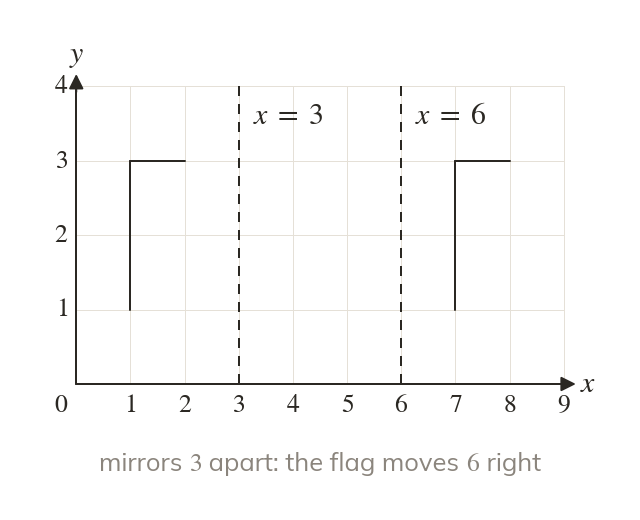

The second acts on the first image
In a combination, the second transformation acts on the first image. Carry them out in the order given.
A dance routine, a robot's path and a tiling pattern are each one move after another. Often the two moves can be replaced by one single move.
Work down the page at your own pace. Write every answer in your book first, then click to check it.
Read each card, then follow the worked examples one step at a time.

In a combination, the second transformation acts on the first image. Carry them out in the order given.

Changing the order of two transformations can change the final image. Follow the order you are given.






Pick an answer. If it's wrong, the feedback tells you which mistake it was.
Printable worksheet — the questions with room to work.


Read each card, then follow the worked examples one step at a time.

Reflecting in both axes gives a half turn about So the pair is one rotation.

Two reflections in parallel mirrors make a translation of twice the gap. Two in perpendicular mirrors make a half turn.
Pick an answer. If it's wrong, the feedback tells you which mistake it was.
Finished? Next lesson: 10H.13.1 Mid-points and Lengths of Line Segments.
Log in, then search for a code to practise that skill.
Videos, worksheets and more on each part of this lesson.